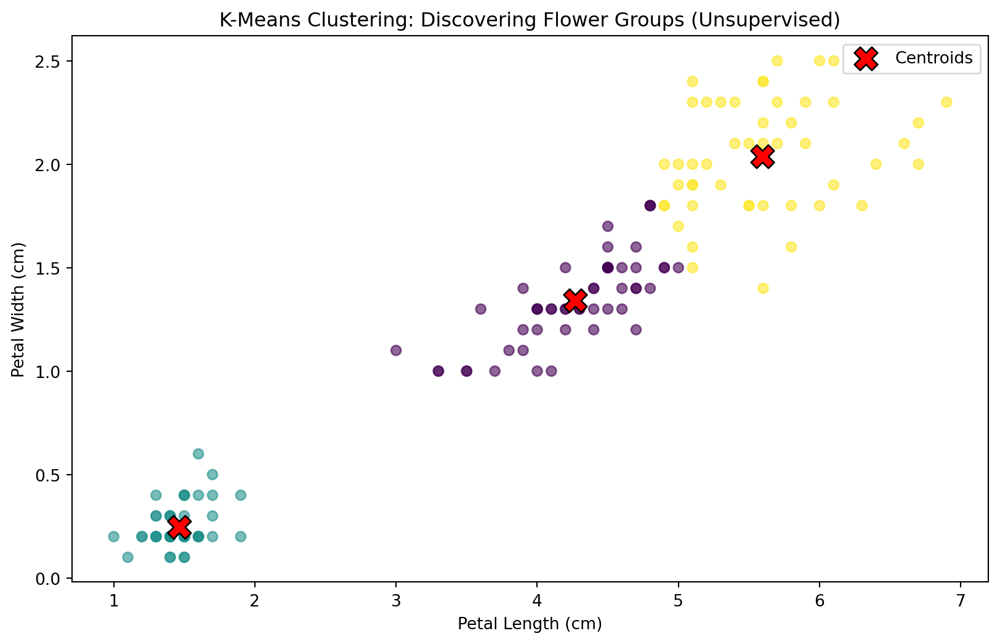
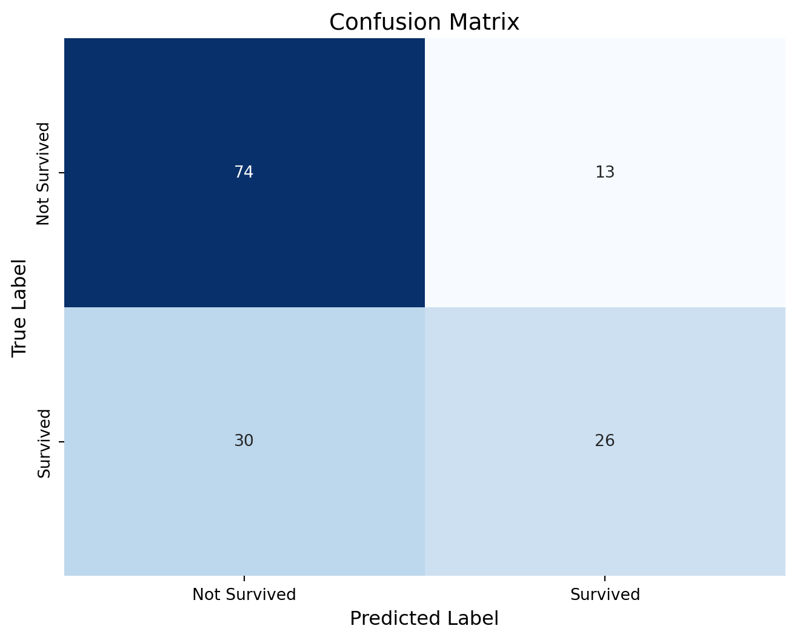
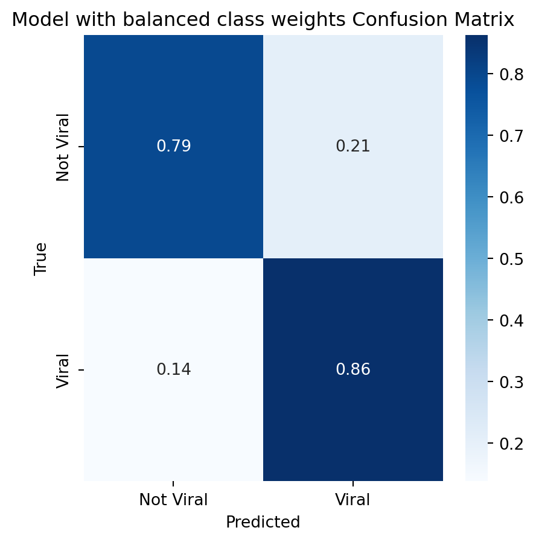
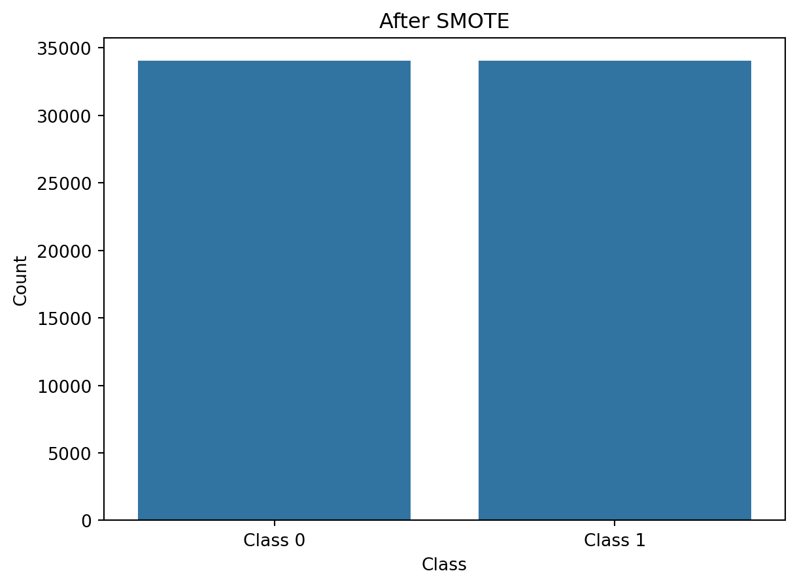
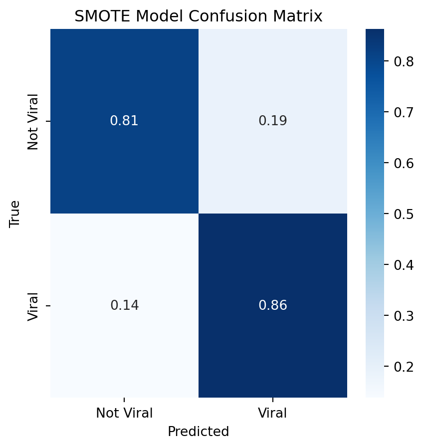

You’ve spent weeks learning regression—predicting continuous values like house prices or income. But what happens when you need to predict categories instead? Will this customer churn or stay? Is this email spam or legitimate? Does this patient have the disease or not?
This is classification, and it’s everywhere. Classification powers the spam filter in your email, the fraud detection on your credit card, the recommendation systems suggesting what you should watch next, and the medical diagnostics helping doctors identify diseases. If you’ve ever wondered “will this happen or not?” or “which category does this belong to?”—that’s a classification problem.
Just like with regression, there isn’t one “best” classification algorithm. Logistic regression is fast and interpretable. Decision trees are easy to explain to non-technical stakeholders. Random forests are robust and powerful. Support vector machines handle high-dimensional data elegantly. k-Nearest neighbors is beautifully simple but computationally expensive. Each has strengths, weaknesses, and situations where it shines.
And the evaluation is completely different from regression. You can’t use R² or MSE. Instead, you’ll need to navigate confusion matrices, ROC curves, precision-recall tradeoffs, and decide whether false positives or false negatives are more costly for your specific problem. A model that’s 99% accurate might be completely useless if you’re trying to detect a rare disease.
This chapter will teach you not just how to fit classification models, but how to think like a data scientist choosing between them. You’ll learn:
How five major classification algorithms work and when to use each
How to interpret confusion matrices and choose the right metrics
The precision-recall tradeoff and why it matters
How to handle imbalanced datasets (the most common real-world scenario)
How to visualize decision boundaries to understand what your model is actually doing
How to use ROC curves to compare model performance
Let’s jump in.
1. Machine Learning Paradigms: Supervised vs Unsupervised Learning
Before we dive into specific classification algorithms, let’s step back and understand a fundamental distinction in machine learning: supervised versus unsupervised learning. Understanding this paradigm will help you recognize when classification is the right approach and when other techniques might be more appropriate.
1.1 Supervised Learning: Learning from Labels
Supervised learning is what we’ve been doing throughout this course: you give the model input data (features) and the correct answers (labels/targets), and it learns to predict the right answer for new inputs.
import pandas as pdimport numpy as npfrom sklearn.model_selection import train_test_splitfrom sklearn.linear_model import LogisticRegression# Load Spotify data (supervised classification example)spotify_df = pd.read_csv('../data/spotify.csv')# We have features (X) and a target (y)# Let's predict whether a song will be popular (binary classification)X = spotify_df[['danceability', 'energy', 'valence', 'tempo']]y = (spotify_df['popularity'] >50).astype(int) # 1 if popular, 0 if notprint("Supervised learning setup:")print(f"Features (X) shape: {X.shape}")print(f"Target (y) shape: {y.shape}")print(f"Class distribution: {y.value_counts().to_dict()}")print("\nFirst few rows of features:")X.head()
Supervised learning setup:
Features (X) shape: (42663, 4)
Target (y) shape: (42663,)
Class distribution: {0: 33578, 1: 9085}
First few rows of features:
danceability
energy
valence
tempo
0
0.792
0.7310
0.8380
113.007
1
0.418
0.3280
0.6800
164.315
2
0.199
0.0957
0.0391
77.722
3
0.862
0.5210
0.3730
154.983
4
0.168
0.1960
0.0554
83.898
print("\nCorresponding targets (1 = popular, 0 = not popular):")y.head()
Corresponding targets (1 = popular, 0 = not popular):
The key to supervised learning is that we have labels. We know what the correct answer is for each training example. The model learns by comparing its predictions to the true labels and adjusting to get closer.
Note
Both regression (from Chapter 2) and classification are supervised learning tasks. The difference is that regression predicts continuous values while classification predicts discrete categories. But both require labeled training data.
1.2 Unsupervised Learning: Finding Patterns Without Labels
Unsupervised learning is different: you only have input data (X), no labels (y). The model’s job is to find patterns, structure, or groupings in the data on its own.
For example, we can use unsupervised learning to find natural groupings of flowers based on their measurements. We don’t tell the model what the groupings should be—it discovers them on its own. This is what clustering algorithms like KMeans do.
from sklearn.cluster import KMeansfrom sklearn.datasets import load_irisimport matplotlib.pyplot as pltimport seaborn as sns# Using Iris dataset, but ignoring the labels (species)# Can we find natural groupings of flowers based on their measurements?iris = load_iris(as_frame=True)iris_df = iris.frameX_unlabeled = iris_df[['petal length (cm)', 'petal width (cm)']]# K-Means clustering: find groups in the datakmeans = KMeans(n_clusters=3, random_state=1, n_init=10)clusters = kmeans.fit_predict(X_unlabeled)# Visualize the clustersplt.figure(figsize=(10, 6))plt.scatter(X_unlabeled['petal length (cm)'], X_unlabeled['petal width (cm)'], c=clusters, cmap='viridis', alpha=0.6)plt.scatter(kmeans.cluster_centers_[:, 0], kmeans.cluster_centers_[:, 1], c='red', marker='X', s=200, edgecolors='black', label='Centroids')plt.xlabel('Petal Length (cm)')plt.ylabel('Petal Width (cm)')plt.title('K-Means Clustering: Discovering Flower Groups (Unsupervised)')plt.legend()plt.show()

Notice what happened: we didn’t tell the model which flowers were which species. We just said “find 3 groups” and it discovered natural clusters based on petal measurements alone.
Common unsupervised learning tasks include:
Clustering: Grouping similar items together (customer segmentation, document clustering)
Dimensionality Reduction: Reducing many features to a few key ones (PCA, t-SNE for visualization)
You have labeled data (you know the correct answers)
You want to predict something specific
You can define success (accuracy, error rate, etc.)
Use unsupervised learning when:
You don’t have labels (or getting labels is too expensive)
You want to explore data structure
You’re looking for patterns you don’t know exist yet
Note
Most real-world applications use supervised learning, because prediction is usually the goal. Unsupervised learning is powerful for exploration and preprocessing, but harder to evaluate (how do you know if clusters are “good”?). Unsupervised learning is often used as an intermediate step to generate new features, which are then used in a supervised learning model.
For the rest of this chapter, we’ll focus on supervised classification, since that’s where you’ll spend most of your time as a data scientist.
2. Classification vs Regression: What’s Different?
2.1 The Fundamental Difference
In regression, we predict a continuous value. In classification, we predict a category. Seems simple, but this fundamental difference changes everything about how we build, train, and evaluate models.
import pandas as pdimport numpy as npimport matplotlib.pyplot as pltimport seaborn as snsfrom sklearn.model_selection import train_test_splitfrom sklearn.preprocessing import StandardScaler# Let's load a classification dataset - Titanic survival# This is a classic binary classification problem: survived or didn't survivetitanic = pd.read_csv('../data/titanic.csv')# Look at the target variableprint("Target variable (Survived) value counts:")print(titanic['Survived'].value_counts())print(f"\nProportion survived: {titanic['Survived'].mean():.2%}")
Instead of predicting a number on a continuous scale, we’re predicting one of two discrete outcomes: 0 (didn’t survive) or 1 (survived). This is binary classification—the most common type.
2.2 Types of Classification Problems
Binary Classification: Two possible outcomes (yes/no, spam/ham, fraud/legitimate)
Titanic survival
Email spam detection
Loan default prediction
Disease diagnosis
Multi-class Classification: More than two categories
Iris flower species (setosa, versicolor, virginica)
Handwritten digit recognition (0-9)
Customer segment classification
Image classification (cat, dog, bird, etc.)
Most of this chapter focuses on binary classification since it’s simpler to visualize and understand. But the techniques extend naturally to multi-class problems.
2.3 Why We Can’t Use Linear Regression
You might be tempted to use linear regression for classification. Just predict the category as a number, right? Let’s see why that breaks:
from sklearn.linear_model import LinearRegression, LogisticRegressionimport seaborn as sns# Prepare simple featurestitanic_clean = titanic[['Age', 'Survived', 'Pclass', 'Fare']].dropna()X = titanic_clean[['Age', 'Pclass', 'Fare']].valuesy = titanic_clean['Survived'].valuesX_train, X_test, y_train, y_test = train_test_split( X, y, test_size=0.2, random_state=42)# Try linear regression (WRONG!)linear_model = LinearRegression()linear_model.fit(X_train, y_train)linear_pred = linear_model.predict(X_test)print('Predictions:')print(linear_pred[:5])print('Classes:')print(y_test[:5])
See the problem? Linear regression gives us predictions like 0.73 or -0.15 or 1.42. But we need 0 or 1! We could threshold at 0.5, but linear regression makes no guarantee that predictions will be between 0 and 1. It’s using the wrong tool for the job.
Classification models are designed to output probabilities (values between 0 and 1) or direct class predictions. That’s why we need specialized algorithms.
3. Logistic Regression: The Foundation
3.1 From Linear to Logistic
Logistic regression might sound like a regression technique, but don’t be fooled—it’s pure classification. The name comes from its history: it takes linear regression and transforms it to work for classification.
Here’s the key insight: instead of predicting the outcome directly, logistic regression predicts the probability of the positive class. It does this by taking a linear combination of features (just like linear regression) and passing it through the sigmoid function:
\[
\text{probability} = \frac{1}{1 + e^{-z}}
\]
where \(z\) is the linear combination: \(z = \beta_0 + \beta_1 x_1 + \beta_2 x_2 + ...\)
The sigmoid function has a beautiful property: it squashes any real number into the range (0, 1), making it perfect for probabilities.
# Visualize the sigmoid functionz = np.linspace(-10, 10, 100)sigmoid =1/ (1+ np.exp(-z))plt.figure(figsize=(10, 6))plt.plot(z, sigmoid, 'b-', linewidth=2)plt.axhline(y=0.5, color='r', linestyle='--', alpha=0.5, label='Decision threshold (0.5)')plt.axvline(x=0, color='r', linestyle='--', alpha=0.5)plt.xlabel('z (linear combination of features)', fontsize=12)plt.ylabel('Probability of positive class', fontsize=12)plt.title('The Sigmoid Function: Turning Linear into Probability', fontsize=14)plt.grid(True, alpha=0.3)plt.legend()plt.show()
When \(z = 0\), the probability is exactly 0.5. As \(z\) increases, the probability approaches 1. As \(z\) decreases, the probability approaches 0. The sigmoid smoothly transitions between these extremes.
3.2 Fitting Logistic Regression
Let’s fit a logistic regression model to predict Titanic survival:
# Fit logistic regressionlog_model = LogisticRegression(random_state=42, max_iter=1000)log_model.fit(X_train, y_train)# Get predictions - both probabilities and classesy_pred_proba = log_model.predict_proba(X_test)[:, 1] # Probability of class 1y_pred_class = log_model.predict(X_test) # Predicted class (0 or 1)# Show the differencecomparison = pd.DataFrame({'True': y_test,'Prob_Survived': y_pred_proba,'Predicted': y_pred_class})comparison.head(10)
True
Prob_Survived
Predicted
0
0
0.302603
0
1
1
0.741984
1
2
1
0.459317
0
3
1
0.791706
1
4
0
0.118771
0
5
1
0.707625
1
6
1
0.183988
0
7
1
0.202158
0
8
0
0.217621
0
9
0
0.261196
0
Notice the two types of predictions:
Probabilities (from predict_proba): Values between 0 and 1 representing confidence
Classes (from predict): Hard 0/1 decisions using a threshold (default 0.5)
If the probability is above 0.5, we predict class 1 (survived). Otherwise, class 0 (didn’t survive). But you can adjust this threshold based on your problem—more on that later.
How can we evaluate this model’s performance? One simple way is to ask about the average probability for each different true class (i.e. average probabibility of survival for those who actually survived vs. those who didn’t).
# Calculate average probability for each true classavg_prob_survived = y_pred_proba[y_test ==1].mean()avg_prob_not_survived = y_pred_proba[y_test ==0].mean()print(f"Average probability for those who survived: {avg_prob_survived:.3f}")print(f"Average probability for those who didn't survive: {avg_prob_not_survived:.3f}")
Average probability for those who survived: 0.505
Average probability for those who didn't survive: 0.339
This is good, but it fails to capture the variability in predictions. A better approach would be to look at the distribution of probabilities for each class.
Let’s visualize this:
import seaborn as snsimport pandas as pdplt.figure(figsize=(10, 6))sns.histplot(data=pd.DataFrame({'prob': y_pred_proba[y_test ==1], 'class': 'Survived'}), x='prob', alpha=0.7, label='Survived', bins=20, color='blue', stat='density')sns.histplot(data=pd.DataFrame({'prob': y_pred_proba[y_test ==0], 'class': 'Did not survive'}), x='prob', alpha=0.7, label='Did not survive', bins=20, color='red', stat='density')plt.xlabel('Predicted Probability of Survival')plt.ylabel('Density')plt.title('Distribution of Predicted Probabilities by True Outcome')plt.legend()plt.show()
We see that there are more people who survived with higher predicted probability of survival, and more people who died with lower predicted probability. This shows that our model is somewhat calibrated - it tends to give higher probabilities to those who actually survived and lower probabilities to those who didn’t.
We’ll learn more advanced techniques later, but this is a good starting point.
3.3 Interpreting Coefficients
Just like linear regression, logistic regression has coefficients. But the interpretation is different. In particular, we’re primarily concerned with the odds ratio of a coefficient, which is calculated as \(e^{\beta}\) where \(\beta\) is the coefficient. This tells us how the odds of the outcome change for a one-unit increase in the predictor.
# Let's use more features to make interpretation interestingfeatures = ['Pclass', 'Age', 'SibSp', 'Parch', 'Fare']titanic_features = titanic[features + ['Survived']].dropna()X_full = titanic_features[features].valuesy_full = titanic_features['Survived'].valuesX_train_full, X_test_full, y_train_full, y_test_full = train_test_split( X_full, y_full, test_size=0.2, random_state=42)# Fit the modellog_model_full = LogisticRegression(random_state=42, max_iter=1000)log_model_full.fit(X_train_full, y_train_full)# Display coefficientscoef_df = pd.DataFrame({'Feature': features,'Coefficient': log_model_full.coef_[0],'Odds_Ratio': np.exp(log_model_full.coef_[0])})coef_df
Feature
Coefficient
Odds_Ratio
0
Pclass
-1.129795
0.323100
1
Age
-0.051874
0.949448
2
SibSp
-0.295579
0.744101
3
Parch
0.241379
1.273004
4
Fare
0.003802
1.003810
Odds ratio measures how much the odds of the outcome change for a one-unit increase in the predictor. An odds ratio greater than 1 indicates a positive association with the outcome, while an odds ratio less than 1 indicates a negative association.
For example, if Fare has an odds ratio of 1.5, it means that for every one-unit increase in fare, the odds of survival increase by 50%. If Pclass has an odds ratio of 0.7, it means that for every one-unit increase in class (higher class number), the odds of survival decrease by 30%. Here we see that:
Increasing passenger class by 1 (e.g. 3rd class -> 2nd class) decreased the predicted probability of survival by about 68% \((1-0.323 = 0.677)\).
Increasing the age by 1 year slightly decreased (~5%) the predicted probability of survival.
Increasing the number of parents/children in the family (Parch) increased the predicted probability of survival by a whopping 27%!
Warning
Be careful about collinearity! Remember that last chapter we discussed how collinearity can lead to non-interpretable coefficients. Since logistic regression is simply performing linear regression under the hood, all those same caveats apply here. For example, it seems weird to say that people in higher passenger classes are less likely to survive. What’s probably going on is collinearity between Pclass and Fare, since both are essentially measuring the same thing (how much the ticket cost).
4. The Confusion Matrix: Understanding Errors
4.1 What Is a Confusion Matrix?
When you make predictions, you’ll make mistakes. The confusion matrix breaks down exactly what kinds of mistakes you’re making. It’s a 2×2 table for binary classification:
from sklearn.metrics import confusion_matrix, classification_report# Get predictionsy_pred = log_model_full.predict(X_test_full)# Create confusion matrixcm = confusion_matrix(y_test_full, y_pred)# Visualize itplt.figure(figsize=(8, 6))sns.heatmap(cm, annot=True, fmt='d', cmap='Blues', cbar=False, xticklabels=['Not Survived', 'Survived'], yticklabels=['Not Survived', 'Survived'])plt.title('Confusion Matrix', fontsize=14)plt.ylabel('True Label', fontsize=12)plt.xlabel('Predicted Label', fontsize=12)plt.show()print(f"\nTrue Negatives (TN): {cm[0, 0]} people died and we predicted they would die")print(f"False Positives (FP): {cm[0, 1]} people survived but we predicted they would die")print(f"False Negatives (FN): {cm[1, 0]} people died but we predicted they would survive")print(f"True Positives (TP): {cm[1, 1]} people survived and we predicted they would survive")

True Negatives (TN): 74 people died and we predicted they would die
False Positives (FP): 13 people survived but we predicted they would die
False Negatives (FN): 30 people died but we predicted they would survive
True Positives (TP): 26 people survived and we predicted they would survive
Here we have shown the confusion matrix with the actual counts from our logistic regression model, such as 74 people, 13 people, etc. However, we’re often more interested in understanding how well our model predicted the correct values. For example, of the people who actually survived, what percentage did we predict will and won’t survive? In other words, we’re normalizing along the rows so that each rows adds up to 100%.
# Calculate row-wise percentages (normalize by actual positives)row_sums = cm.sum(axis=1)recall_precision = cm.astype(float) / row_sums.reshape(-1, 1)# Display as a confusion matrix, with numbers formatted as percentagesplt.figure(figsize=(8, 6))sns.heatmap(recall_precision, annot=True, fmt='.0%', cmap='Blues', cbar=False, xticklabels=['Not Survived', 'Survived'], yticklabels=['Not Survived', 'Survived'])plt.title('Normalized Confusion Matrix (Row-wise)', fontsize=14)plt.ylabel('True Label', fontsize=12)plt.xlabel('Predicted Label', fontsize=12)plt.show()
Here we see that, of the people who actually died, 87% were correctly predicted as having died (True Negative rate), while 13% were incorrectly predicted as having survived (False Positive rate). Similarly, of the people who actually survived, 92% were correctly predicted as having survived (True Positive rate), while 8% were incorrectly predicted as having died (False Negative rate).
Tip
Displaying the data normalized relative to the true values is typically more useful than looking at the raw numbers. When converting to percentages we see that our model did quite well predicting people who will die, but very poorly predicting people who will survive. This suggests our model may be biased towards predicting death, which could be important to consider for real-world applications.
4.2 Computing Metrics from the Confusion Matrix
All the important classification metrics come directly from these four numbers:
Accuracy: What percentage of all predictions were correct? \[
\text{Accuracy} = \frac{TP + TN}{TP + TN + FP + FN}
\]
F1 Score: Harmonic mean of precision and recall \[
\text{F1} = 2 \cdot \frac{\text{Precision} \cdot \text{Recall}}{\text{Precision} + \text{Recall}}
\]
False positives and false negatives are equally costly
Example: Predicting coin flips (50/50 balanced, no asymmetric cost)
Use Precision when:
False positives are very costly
You want to be confident when you predict positive
Example: Spam detection (marking legitimate email as spam is very annoying, but one or two spam emails slipping through is acceptable)
Use Recall when:
False negatives are very costly
You want to catch all positive cases, even if it means some false alarms
Example: Disease screening (missing a sick patient with a life-threatening condition is much worse than telling a healthy patient that they are sick)
Use F1 Score when:
You want a balance between precision and recall
Classes are imbalanced
Example: Fraud detection (imbalanced, and both FP and FN have significant consequences)
Note
There’s almost always a tradeoff between precision and recall. Increase one, and the other goes down. You need to decide which matters more for your specific problem.
Decision trees make predictions by asking a series of yes/no questions about the features. They split the data recursively based on feature values, creating a tree structure.
Here’s the beautiful part: decision trees are incredibly interpretable. You can literally draw out the decision-making process and explain it to anyone.
from sklearn.tree import DecisionTreeClassifier, plot_tree# Fit a simple decision treetree_model = DecisionTreeClassifier(max_depth=3, random_state=42)tree_model.fit(X_train_full, y_train_full)# Visualize the treeplt.figure(figsize=(20, 10))plot_tree(tree_model, feature_names=features, class_names=['Not Survived', 'Survived'], filled=True, fontsize=10, rounded=True)plt.title('Decision Tree for Titanic Survival', fontsize=16)plt.show()
Each box shows:
The question being asked (e.g., “Fare <= 26.27?”)
The Gini impurity (measure of how mixed the classes are, discussed in the next section)
The number of samples reaching this node
The class distribution (number of zeros and ones)
The predicted class
5.2 Splitting Criteria: Gini vs Entropy
Decision trees decide where to split by maximizing information gain. The most common criteria is the Gini impurity.
Gini Impurity: Measures how often a randomly chosen element would be incorrectly classified \[
\text{Gini} = 1 - \sum_{i=1}^{C} p_i^2
\]
where \(p_i\) is the proportion of samples in class \(i\).
Note
Another criteria you’ll sometimes see is the Entropy, which is a measure of the amount of “disorder” or uncertainty. It is defined as \[
\text{Entropy} = -\sum_{i=1}^{C} p_i \log_2(p_i)
\] The actual values of Gini and entropy are often extremely similar, and are measuring similar things. Therefore, we’ll focus on Gini impurity in this textbook.
But what exactly is Gini computing? Let’s look at the tree we just created. In the first node, we see that there are 308 samples with class 0 (survived) and 154 samples with class 1 (did not survive). The Gini impurity is computed as follows: \[
\text{Gini} = 1 - \displaystyle\sum_{i=1}^2 p_i^2 = 1 - \left(\frac{308}{462}\right)^2 - \left(\frac{154}{462}\right)^2 = \frac{4}{9} = 0.444
\]
Notice that this is exactly the Gini imprutiy stated in that node in the tree.
In general, how should we think about the value for Gini impurity?
Imagine that, in one of the nodes, there were 100 samples, and all of the samples were people who survived. Then the Gini impurity would be
Note how Gini impurity is small at the extremes (all samples have the same class), and bigger when the classes are more balanced. We can see this in the graph below, where the x-axis represents the proportion of class 1, and the y-axis represents the Gini impurity.
import seaborn as snsimport pandas as pdimport numpy as npimport matplotlib.pyplot as pltp = np.linspace(0, 1, 100, endpoint=True)gini =1- (p**2+ (1-p)**2)gini_df = pd.DataFrame({'p': p,'gini': gini})plt.figure(figsize=(10, 6))sns.lineplot(x='p', y='gini', data=gini_df)plt.xlabel('Proportion of Class 1')plt.ylabel('Gini Impurity')plt.title('Gini Impurity in a Binary Classification Problem')plt.show()
So, how is Gini impurity actually used to determine the splitting in decision trees? Our goal is to choose a split (i.e. a question) that best splits the data. For example, if we wanted to determine how well students will do in a class, asking whether they own a dog is a valid question, but won’t give me any additional information. On the other hand, if we ask if they regularly attend tutoring, we will get a much better idea of their performance.
In decision trees we use Gini impurity by calculating the Gini impurity for each possible split, and then choosing the split that has the smallest Gini impurity. This is because a smaller Gini impurity means that the split is better at separating the classes.
5.3 Controlling Tree Depth: The Overfitting Problem
Trees have a dangerous tendency: if you let them grow without limits, they’ll memorize the training data.
# Compare different tree depthsdepths = [1, 3, 5, 10, 20, None] # None means no limittrain_scores = []test_scores = []for depth in depths: tree = DecisionTreeClassifier(max_depth=depth, random_state=42) tree.fit(X_train_full, y_train_full) train_scores.append(tree.score(X_train_full, y_train_full)) test_scores.append(tree.score(X_test_full, y_test_full))# Plotdepth_labels = [str(d) if d isnotNoneelse'Unlimited'for d in depths]plt.figure(figsize=(10, 6))plt.plot(depth_labels, train_scores, 'o-', label='Training Accuracy', linewidth=2)plt.plot(depth_labels, test_scores, 's-', label='Test Accuracy', linewidth=2)plt.xlabel('Maximum Tree Depth', fontsize=12)plt.ylabel('Accuracy', fontsize=12)plt.title('Tree Depth vs Performance: The Overfitting Story', fontsize=14)plt.legend()plt.grid(True, alpha=0.3)plt.show()
Classic overfitting! Training accuracy keeps increasing with depth, but test accuracy peaks and then plateaus or even decreases. The tree is memorizing noise in the training data.
We can see this concretely by printing out one of the decision paths in the deep trees:
# Print one of the decision paths in the deep treestree = DecisionTreeClassifier(max_depth=20, random_state=42)tree.fit(X_train_full, y_train_full)sample_id =0single_sample = X_test_full[sample_id].reshape(1, -1) # Reshape for single sample input# Get the decision path for the single samplenode_indicator = tree.decision_path(single_sample)node_indices = node_indicator.indices[node_indicator.indptr[0]:node_indicator.indptr[1]]# Get tree structure information for interpreting the pathchildren_left = tree.tree_.children_leftchildren_right = tree.tree_.children_rightfeature = tree.tree_.featurethreshold = tree.tree_.thresholdfeature_names = featuresprint(f"Decision path for sample {sample_id}:")for node_id in node_indices:if children_left[node_id] != children_right[node_id]: # Check if it's a split node feature_index = feature[node_id] threshold_value = threshold[node_id] sample_feature_value = single_sample[0, feature_index]if sample_feature_value <= threshold_value: decision =f"{feature_names[feature_index]} ({sample_feature_value:.2f}) <= {threshold_value:.2f}"else: decision =f"{feature_names[feature_index]} ({sample_feature_value:.2f}) > {threshold_value:.2f}"print(f" Node {node_id}: Split on {decision}")else: # It's a leaf nodeprint(f" Node {node_id}: Leaf node reached (prediction: {tree.predict(single_sample)[0]})")
Decision path for sample 0:
Node 0: Split on Fare (13.00) <= 52.28
Node 1: Split on Age (42.00) > 5.50
Node 11: Split on Pclass (2.00) <= 2.50
Node 12: Split on Age (42.00) <= 42.50
Node 13: Split on Fare (13.00) > 12.31
Node 23: Split on Pclass (2.00) > 1.50
Node 43: Split on Age (42.00) > 15.00
Node 45: Split on Age (42.00) > 39.50
Node 103: Split on Fare (13.00) <= 26.50
Node 104: Leaf node reached (prediction: 1)
We start by asking reasonable seeming questions, but then asking more and more specific questions that seem unnecessary. For example, we ask if the persons age is:
Over 5.5
Less than 42.5
Over 15
Over 39.5
Putting these together, we’ve asked if the person is between the ages of 39.5 and 42.5. That’s unnecessarily specific; do we really believe that a person being exactly 40 or 41 years old is so important? Instead, what’s happening is that our model is overfitting to the training data, and the results don’t generalize to the test data.
Common hyperparameters to control overfitting:
max_depth: Maximum depth of the tree
min_samples_split: Minimum samples required to split a node
min_samples_leaf: Minimum samples required at a leaf node
max_features: Number of features to consider for each split
5.4 Feature Importance
Trees can tell you which features are most important for making predictions:
Feature importance represents how much each feature contributes to reducing impurity across all splits. Higher values mean more important features.
Note
Feature importance can be calculated a number of different ways. One way is to take a column, randomly shuffle the values, and see how the impurity changes. If the impurity decreases, then the feature is important. This is called permutation feature importance.
For DecisionTreeClassifier, feature importance is calculated using impurity decrease. The impurity decrease is the difference in impurity before and after a split. The higher the impurity decrease, the more important the feature. For example, if a feature can be used to end up with nodes with small impurity, that means that feature can split the data into groups where one class is highly represented. Recall from above that impurity is a measure of how mixed up the classes are in a node. So if a feature can be used to end up with nodes with small impurity, that means that feature can split the data into groups where one class is highly represented. This is why the feature is important.
Tip
Different models calculate feature importance differently. However, they’re all trying to answer the same question: how much does this feature matter in terms of making predictions?
Don’t treat feature importance like a gold standard. It’s a tool for understanding your model, but it’s not a substitute for domain knowledge. Instead, you can often use feature importance to double-check your own understanding of the problem. If you believe a feature should be important, but it’s not showing up in the feature importance, then why not? Is it a problem with the model/data, or a problem with your understanding?
6. Random Forests: Ensemble Power
6.1 Why Ensembles Work
Here’s a powerful idea: what if instead of training one tree, we trained many trees and let them vote?
Random Forests are one of the most successful examples. The key insight: many weak learners can combine to create a strong learner.
Note
Ensemble learning is the idea of combining many weak learners to create a strong learner. The key insight is that many weak learners can combine to create a strong learner.
By a weak learner we typically mean a very simple model, such as a decision tree with a depth of two. By a strong learner we typically mean a more complex model, such as a decision tree with a depth of ten.
The idea is that one large complex model may overfit to the training data, but many small simple models can combine to create a strong learner that generalizes well to the test data.
Random forests are one example of ensemble models, but we’ll learn more. Ensemble models are typically the gold standard in classical machine learning.
How Random Forests work:
Create many decision trees (e.g., 100 trees)
For each tree:
Sample a random subset of the data (bootstrapping)
At each split, only consider a random subset of features
Make predictions by majority vote (classification), or by averaging probabilities (regression)
The randomness in both samples and features ensures that trees are different from each other. After all, if we took all rows and all columns, each weak learner would likely be exactly the same. By sampling a random subset of the data and features, we ensure that each tree is different from the others.
When weak learners disagree, it’s often because they’re focusing on different aspects of the data. When they agree, you can be more confident.
6.2 Fitting a Random Forest
from sklearn.ensemble import RandomForestClassifier# Fit random forestrf_model = RandomForestClassifier(n_estimators=50, max_depth=5, random_state=42)rf_model.fit(X_train_full, y_train_full)# Compare to single treetree_comparison = DecisionTreeClassifier(max_depth=5, random_state=42)tree_comparison.fit(X_train_full, y_train_full)print("Single Decision Tree:")print(f" Training Accuracy: {tree_comparison.score(X_train_full, y_train_full):.3f}")print(f" Test Accuracy: {tree_comparison.score(X_test_full, y_test_full):.3f}")print("\nRandom Forest (50 trees):")print(f" Training Accuracy: {rf_model.score(X_train_full, y_train_full):.3f}")print(f" Test Accuracy: {rf_model.score(X_test_full, y_test_full):.3f}")
Single Decision Tree:
Training Accuracy: 0.765
Test Accuracy: 0.678
Random Forest (50 trees):
Training Accuracy: 0.788
Test Accuracy: 0.699
Random forests typically achieve better generalization than single trees. The ensemble reduces overfitting through diversity.
Tip
Random forests are most useful for complex data with many columns, and with complex relationships between columns. For simple data with few columns, a single decision tree is often sufficient.
Warning
You may feel like “if one tree is good, then more trees are better!” This is true to an extent, but it comes with a tradeoff. When you train an ensemble model such as a random forest, you’re training many models. Each model takes time to train, and each model uses memory and compute time. Imagine training a single tree which takes ten seconds to train.
Now imagine training 50 trees, which would take 500 seconds to train, or nearly ten minutes! Combine this with hyperparameter tuning such as through a grid search, and you could easily be looking at an hour or more of training time. If the improvement in performance is large this may be worth it. But if your data is simple enough to get by with a simpler model, you can save hours of compute by going with a simpler model.
6.3 Feature Importance in Random Forests
Random forests also provide feature importances, but they’re generally more reliable than single trees because they average across many trees:
# Get feature importances from both modelstree_importance = pd.DataFrame({'Feature': features,'Decision Tree': tree_comparison.feature_importances_,'Random Forest': rf_model.feature_importances_})# Melt the dataframe for plottingimportance_melted = tree_importance.melt( id_vars='Feature', var_name='Model', value_name='Importance')# Sort by average importance across both modelsavg_importance = tree_importance.set_index('Feature').mean(axis=1).sort_values(ascending=False)importance_melted['Feature'] = pd.Categorical( importance_melted['Feature'], categories=avg_importance.index, ordered=True)# Create dodged bar chartplt.figure(figsize=(10, 6))sns.barplot(data=importance_melted, x='Importance', y='Feature', hue='Model', palette='Set2')plt.xlabel('Importance', fontsize=12)plt.ylabel('Feature', fontsize=12)plt.title('Feature Importance: Decision Tree vs Random Forest', fontsize=14)plt.legend(title='Model', fontsize=10)plt.tight_layout()plt.show()
Random forest importances tend to be more stable because they’re averaged across many trees with different random subsets of data and features.
6.4 Hyperparameter Tuning
Random forests have several important hyperparameters:
# Test different numbers of treesn_trees_list = [25, 50, 75, 100, 150, 200]scores = []for n_trees in n_trees_list: rf = RandomForestClassifier(n_estimators=n_trees, random_state=42) rf.fit(X_train_full, y_train_full) scores.append(rf.score(X_test_full, y_test_full))plt.figure(figsize=(10, 6))plt.plot(n_trees_list, scores, 'o-', linewidth=2, markersize=8)plt.xlabel('Number of Trees', fontsize=12)plt.ylabel('Test Accuracy', fontsize=12)plt.title('Random Forest Performance vs Number of Trees', fontsize=14)plt.grid(True, alpha=0.3)plt.show()
Performance typically improves with more trees, but you get diminishing returns. After a certain point (often 100-500 trees), adding more trees barely helps (or even leads to overfitting)but makes training slower. Use hyperparameter tuning to find the right number of trees. A typically starting point is 50 to 100 trees.
Tip
Random forests are often a great default choice for classification. They’re robust, handle non-linear relationships, require minimal hyperparameter tuning, and rarely overfit badly. When in doubt, try a random forest!
7. Support Vector Machines: Maximum Margin Classifiers
7.1 The Margin Concept
Support Vector Machines (SVMs) have a beautiful geometric intuition: find the decision boundary that maximizes the distance to the nearest points from each class.
Think of it like this: if you’re drawing a line to separate two groups of points, you want it to be as far as possible from both groups. This gives you more confidence that future points will be classified correctly.
The “support vectors” are the points closest to the decision boundary—these are the critical points that define where the boundary goes.
from sklearn.svm import SVC# Fit SVM with linear kernelsvm_linear = SVC(kernel='linear', random_state=42)svm_linear.fit(X_train_full, y_train_full)print(f"SVM Linear Kernel Accuracy: {svm_linear.score(X_test_full, y_test_full):.3f}")print(f"Number of support vectors: {len(svm_linear.support_)}")
SVM Linear Kernel Accuracy: 0.678
Number of support vectors: 374
7.2 The Kernel Trick
Here’s where SVMs get really powerful: the kernel trick. By using different kernel functions, SVMs can create non-linear decision boundaries while still solving a linear problem in a higher-dimensional space.
Polynomial: Creates polynomial curves as boundaries
# Compare different kernelskernels = ['linear', 'rbf', 'poly']svm_models = {}for kernel in kernels: svm = SVC(kernel=kernel, random_state=42) svm.fit(X_train_full, y_train_full) svm_models[kernel] = svmprint(f"{kernel:8s} kernel - Test Accuracy: {svm.score(X_test_full, y_test_full):.3f}")
linear kernel - Test Accuracy: 0.678
rbf kernel - Test Accuracy: 0.615
poly kernel - Test Accuracy: 0.629
6.3 Visualizing SVM Decision Boundaries
Let’s see how different kernels create different boundaries. We’ll use California housing data, where different regions of the state have vastly different housing prices—a perfect example of non-linear geographic clustering:
# Load California housing datafrom sklearn.datasets import fetch_california_housingfrom sklearn.preprocessing import StandardScalercalifornia = fetch_california_housing(as_frame=True)ca_df = california.frame# Create binary classification: expensive (>$3) vs affordable (<=$3) houses# Median house value is in $100,000s, so 3 = $300,000ca_df['expensive'] = (ca_df['MedHouseVal'] >3.0).astype(int)# Use longitude and median house value for visualization# Different parts of California have very different price patternsX_viz = ca_df[['Latitude', 'MedHouseVal']].valuesy_viz = ca_df['expensive'].values# Sample for faster visualization (full dataset is 20k+ points)np.random.seed(42)sample_idx = np.random.choice(len(X_viz), size=2000, replace=False)X_viz_raw = X_viz[sample_idx]y_viz = y_viz[sample_idx]# Scale features for SVM (IMPORTANT: SVMs are sensitive to feature scales)scaler = StandardScaler()X_viz = scaler.fit_transform(X_viz_raw)expensive = y_viz ==1# Create a mesh for plotting decision boundaries (in scaled space)lon_range = np.linspace(X_viz[:, 0].min(), X_viz[:, 0].max(), 100)price_range = np.linspace(X_viz[:, 1].min(), X_viz[:, 1].max(), 100)lon_mesh, price_mesh = np.meshgrid(lon_range, price_range)mesh_points = np.c_[lon_mesh.ravel(), price_mesh.ravel()]# Fit SVMs with different kernels on scaled datasvm_linear_viz = SVC(kernel='linear', random_state=42)svm_rbf_viz = SVC(kernel='rbf', gamma='auto', random_state=42)svm_linear_viz.fit(X_viz, y_viz)svm_rbf_viz.fit(X_viz, y_viz)# Create predictions on meshmesh_linear = svm_linear_viz.predict(mesh_points).reshape(lon_mesh.shape)mesh_rbf = svm_rbf_viz.predict(mesh_points).reshape(lon_mesh.shape)# Plot bothfig, axes = plt.subplots(1, 2, figsize=(16, 6))for ax, mesh_pred, title inzip(axes, [mesh_linear, mesh_rbf], ['SVM - Linear Kernel', 'SVM - RBF Kernel']): ax.contourf(lon_mesh, price_mesh, mesh_pred, levels=1, cmap='RdYlGn', alpha=0.4) ax.scatter(X_viz[expensive, 0], X_viz[expensive, 1], c='darkgreen', marker='o', s=20, edgecolors='black', alpha=0.5, label='Expensive (>$300k)') ax.scatter(X_viz[~expensive, 0], X_viz[~expensive, 1], c='darkred', marker='x', s=20, alpha=0.5, label='Affordable (≤$300k)') ax.set_xlabel('Latitude', fontsize=12) ax.set_ylabel('Median House Value ($100k)', fontsize=12) ax.set_title(title, fontsize=14) ax.legend() ax.grid(True, alpha=0.2)plt.tight_layout()plt.show()
See the difference? The linear kernel creates a straight boundary—it tries to separate expensive from affordable homes with a single line. But the RBF kernel creates smooth, curved boundaries that adapt to the geographic clustering of housing prices.
Notice how the RBF kernel captures the reality that certain geographic regions (coastal areas, Bay Area) command higher prices regardless of other factors. The curved decision boundary wraps around these high-value clusters much more naturally than a straight line ever could.
7.4 When to Use SVMs
Strengths:
Effective in high-dimensional spaces
Memory efficient (only stores support vectors)
Flexible with different kernels
Works well with clear margin of separation
Weaknesses:
Slow to train on large datasets (doesn’t scale well beyond ~10,000 samples)
Requires feature scaling (sensitive to feature magnitudes)
Choosing the right kernel and hyperparameters can be tricky
Less interpretable than trees or logistic regression
Warning
Always scale your features before using SVMs! They’re very sensitive to feature magnitudes. Use StandardScaler or MinMaxScaler from scikit-learn.
8. k-Nearest Neighbors: Simple but Powerful
8.1 The k-NN Algorithm
k-Nearest Neighbors might be the simplest classification algorithm: to classify a new point, find the k closest training points and let them vote.
That’s it. No training phase. No learning parameters. Just store the data and compute distances when you need to make predictions.
from sklearn.neighbors import KNeighborsClassifier# Fit k-NN with k=5knn = KNeighborsClassifier(n_neighbors=5)knn.fit(X_train_full, y_train_full)print(f"k-NN (k=5) Test Accuracy: {knn.score(X_test_full, y_test_full):.3f}")
k-NN (k=5) Test Accuracy: 0.650
Warning
KNN models sound like they should be simple. You simply find the k closest training points and let them vote. But in practice, they can be devilishly complex. For example, how do you measure “closeness”? In some data that may be simple, such as closeness in position or time. But what about data on students? What do we mean by the “closest students”? Closest in age? Same/similar major? Same/similar year in college? Are all of these equally important? Is one more important than another? How about closeness in courses taken? When should we consider two courses “close”?
All of these questions are enormously important in building effective KNN models, but they don’t have easy answers. KNN models, more than many others, require extensive testing to determine what works best.
8.2 Choosing k: The Bias-Variance Tradeoff Again
The value of k controls the bias-variance tradeoff:
Small k (e.g., k=1): Very flexible, low bias, high variance (overfitting)
Large k (e.g., k=100): Smoother boundaries, high bias, low variance (underfitting)
# Test different values of kk_values = [1, 3, 5, 10, 20, 50, 100]train_scores_knn = []test_scores_knn = []for k in k_values: knn = KNeighborsClassifier(n_neighbors=k) knn.fit(X_train_full, y_train_full) train_scores_knn.append(knn.score(X_train_full, y_train_full)) test_scores_knn.append(knn.score(X_test_full, y_test_full))plt.figure(figsize=(10, 6))plt.plot(k_values, train_scores_knn, 'o-', label='Training Accuracy', linewidth=2)plt.plot(k_values, test_scores_knn, 's-', label='Test Accuracy', linewidth=2)plt.xlabel('k (number of neighbors)', fontsize=12)plt.ylabel('Accuracy', fontsize=12)plt.title('k-NN: Choosing k', fontsize=14)plt.legend()plt.grid(True, alpha=0.3)plt.show()
Notice the pattern: small k gives high training accuracy but may overfit. Moderate k (often 3-10) tends to work best, but hyperparameter tuning is needed to determine the best choice.
8.3 Distance Metrics: How Do We Measure “Closeness”?
The entire k-NN algorithm hinges on one question: how do you measure which points are “closest”? This isn’t just a technical detail—it fundamentally changes how your model behaves. Scikit-learn supports several distance metrics, and choosing the right one can dramatically affect performance.
The most common distance metrics:
Euclidean distance (default): The straight-line distance between two points \[d(x, y) = \sqrt{\sum_{i=1}^{n} (x_i - y_i)^2}\]
Manhattan distance: Sum of absolute differences (think of it as the number of city blocks between two locations, you can only walk horizontally or vertically) \[d(x, y) = \sum_{i=1}^{n} |x_i - y_i|\]
Minkowski distance: A mixture between Euclidean and Manhattan (p=1 is Manhattan, p=2 is Euclidean, but you can set p to any positive real number) \[d(x, y) = \left(\sum_{i=1}^{n} |x_i - y_i|^p\right)^{1/p}\]
Cosine distance: Measures angle between vectors (ignores the length of the vectors, and only cares about how far apart the directions they point are) \[d(x, y) = 1 - \frac{x \cdot y}{||x|| \cdot ||y||}\]
Hamming distance: Checks whether two values are equal or not, and computes the average number of features where two samples are equal \[d(x, y) = \frac{1}{n}\sum_{i=1}^{n} \mathbb{1}(x_i \neq y_i)\] where \(\mathbb{1}(x_i \neq y_i)\) equals 1 if \(x_i \neq y_i\) and 0 otherwise.
Let’s see how different metrics perform on our Titanic data:
from sklearn.neighbors import KNeighborsClassifier# Test different distance metricsmetrics = ['euclidean', 'manhattan', 'minkowski', 'cosine', 'hamming']metric_scores = {}for metric in metrics:# Some metrics need additional parametersif metric =='minkowski': knn = KNeighborsClassifier(n_neighbors=5, metric=metric, p=3)else: knn = KNeighborsClassifier(n_neighbors=5, metric=metric) knn.fit(X_train_full, y_train_full) train_score = knn.score(X_train_full, y_train_full) test_score = knn.score(X_test_full, y_test_full) metric_scores[metric] = {'train': train_score, 'test': test_score}# print(f"{metric:12s} - Train: {train_score:.3f}, Test: {test_score:.3f}")# Plot the metric and train/test scoreplt.figure(figsize=(10, 6))plt.plot(metrics, [scores['train'] for scores in metric_scores.values()], 'o-', label='Training Accuracy', linewidth=2)plt.plot(metrics, [scores['test'] for scores in metric_scores.values()], 's-', label='Test Accuracy', linewidth=2)plt.xlabel('Distance Metric', fontsize=12)plt.ylabel('Accuracy', fontsize=12)plt.title('k-NN: Choosing Distance Metric', fontsize=14)plt.legend()plt.grid(True, alpha=0.3)plt.show()
Different metrics can give meaningfully different results! But which should you use?
You care about direction/orientation, not magnitude
Data is high-dimensional and sparse
Feature scales vary wildly
Example: Text data (word counts), recommendation systems with user ratings
Hamming distance works well when:
You have categorical or binary features
All features are equally important (no scaling needed)
You want to count how many features differ, not by how much
Example: DNA sequences, binary feature vectors, categorical data (after one-hot encoding)
Note
Hamming distance treats all feature differences equally. If Feature A differs by 0.1 and Feature B differs by 10, Hamming sees both as “different.” It’s perfect for categorical data where “different is different” regardless of magnitude, but not ideal for continuous numeric features where the size of the difference matters.
Let’s visualize how these different metrics create different neighborhoods. We’ll use a simple 2D example:
See how the same query point has different nearest neighbors depending on the metric? Euclidean forms circular neighborhoods, Manhattan forms diamond-shaped neighborhoods, and cosine focuses on angular similarity.
8.4 Mixing Metrics: Different Features Need Different Distances
Here’s a critical insight that’s often overlooked: real datasets have different types of features, and each type needs its own distance metric.
Think about internet service provider (ISP) customer data and predicting churn:
Internet Service: Categorical (DSL, Fiber optic, No internet). We want to know if two customers have the same service type—not treat “DSL” as somehow numerically between “No internet” and “Fiber optic”
Contract type: Categorical (Month-to-month, One year, Two year). Either the same or different.
Gender: Categorical (Male, Female). Same or different.
Monthly Charges: Continuous numeric variable. A customer paying $50/month is more similar to one paying $55 than to one paying $100.
Tenure: Continuous numeric variable. The actual difference in months matters.
The problem? When you call KNeighborsClassifier(metric='euclidean'), it treats ALL features the same way! It computes Euclidean distance on internet service type and contract (treating categorical values as if they were numbers) just like it does on monthly charges and tenure.
The solution: Create a custom distance metric that treats different feature types appropriately.
For example, you could define a custom distance function that:
Uses Hamming distance (equality check) for categorical features (Internet Service, Contract, Gender)
Uses Euclidean distance for continuous features (Monthly Charges, Tenure)
These can be difficult to implement by hand, so working together with an AI coding assistant is the way to go.
With pure Euclidean distance, if internet service is encoded as DSL=0 and Fiber optic=1, the difference in service type contributes “1” to the distance calculation, just like a $1/month price difference. But internet service type is categorical! Having DSL vs Fiber optic is a fundamental categorical difference—not a numeric one.
With the mixed metric, we recognize that internet service differs (Hamming distance = 1), contract and gender are the same (Hamming distance = 0 for each), and then we properly compute Euclidean distance for the continuous features (monthly charges, tenure) where the magnitude of difference actually matters.
Warning
When building custom distance metrics:
Identify feature types first: Which are categorical? Which are continuous?
Scale continuous features: Use StandardScaler before computing distances
Don’t scale categorical features: They represent discrete categories, not magnitudes
Test your metric: Does it give sensible distances for sample pairs?
Weight carefully: You might want to weight categorical and continuous distances differently
The custom metric approach requires more work, but it’s often worth it for datasets with mixed feature types!
Tip
How to choose a distance metric:
Start with Euclidean (the default) - it works well in most cases
Try Hamming if you have categorical features that have no obvious ordering
Try Manhattan if you have outliers or features on very different scales
Try Cosine if your data is high-dimensional or sparse (like text data)
Use cross-validation to compare metrics on your specific dataset
Always scale your features before using distance-based methods!
The “best” metric depends on your data and problem. Don’t just accept the default—experiment and use validation performance to guide your choice.
Warning
Feature scaling is critical for k-NN! If one feature ranges from 0-1 and another ranges from 0-1000, the second feature will dominate the distance calculation. Always use StandardScaler or MinMaxScaler before fitting k-NN models.
The diagonal line represents a random classifier (flip a coin)
The closer your curve sticks to the top-left corner, the better
AUC (Area Under the Curve) summarizes performance in one number
AUC = 1.0: Perfect classifier
AUC = 0.5: Random guessing
AUC < 0.5: Worse than random (you’re predicting backwards!)
Note
Why is an ROC curve “sticking to the top-left corner” a good thing? The top-left corner means we have essentially zero false positives, and high true positives.
9.2 Comparing Multiple Models with ROC
Let’s compare all our models on the same ROC plot:
# Get probabilities from all modelsmodels_for_roc = {'Logistic Regression': log_model_full,'Decision Tree': tree_final,'Random Forest': rf_model,'SVM (RBF)': SVC(kernel='rbf', probability=True, random_state=42).fit(X_train_full, y_train_full),'k-NN': knn}plt.figure(figsize=(10, 8))for name, model in models_for_roc.items():ifhasattr(model, "predict_proba"): y_proba = model.predict_proba(X_test_full)[:, 1]else:# SVM without probability=True would fail here y_proba = model.predict_proba(X_test_full)[:, 1] fpr, tpr, _ = roc_curve(y_test_full, y_proba) auc = roc_auc_score(y_test_full, y_proba) plt.plot(fpr, tpr, linewidth=2, label=f'{name} (AUC = {auc:.3f})')plt.plot([0, 1], [0, 1], 'k--', linewidth=1, label='Random (AUC = 0.5)')plt.xlabel('False Positive Rate', fontsize=12)plt.ylabel('True Positive Rate', fontsize=12)plt.title('ROC Curves: Model Comparison', fontsize=14)plt.legend(fontsize=10)plt.grid(True, alpha=0.3)plt.show()
This visualization makes it easy to compare models at a glance. The model with the highest AUC is typically performing best across all thresholds.
9.3 When to Use ROC/AUC
Use ROC/AUC when:
You want threshold-independent evaluation
Classes are relatively balanced
You care about ranking (who’s more likely to be positive?)
Don’t use ROC/AUC when:
Classes are severely imbalanced
You have a specific threshold constraint
You care more about absolute performance at one threshold
10. Class Imbalance: The Real-World Problem
10.1 Why Class Imbalance Matters
The truth is, most real-world classification problems have imbalanced classes. Fraud detection? Maybe 0.1% of transactions are fraud. Disease diagnosis? Most patients who show up a a hospital don’t have a specific disease. Email spam? While we all get spam, that’s not the majority of our email.
Class imbalance breaks naive approaches. For example, suppose we had data where 1% of the people had a given rare disease. If we built a model that predicted everyone as not having the disease, we would be 99% accurate. But that’s not a very useful model!
10.2 Detecting Class Imbalance
Always check class balance before building models. Let’s look at a real example: predicting whether a song on Spotify will become a “viral hit” (popularity score above 80). Most songs don’t go viral, so this is naturally imbalanced:
# Load Spotify data and create an imbalanced classification problemspotify_df = pd.read_csv('../data/spotify.csv')# Create binary target: viral hit (popularity > 80) vs notspotify_df['viral_hit'] = (spotify_df['popularity'] >80).astype(int)# Select numeric features for our modelspotify_features = ['danceability', 'energy', 'loudness', 'speechiness','acousticness', 'instrumentalness', 'liveness', 'valence', 'tempo']# Drop rows with missing valuesspotify_clean = spotify_df[spotify_features + ['viral_hit']].dropna()X_imbalanced = spotify_clean[spotify_features].valuesy_imbalanced = spotify_clean['viral_hit'].values# Split imbalanced dataX_train_imb, X_test_imb, y_train_imb, y_test_imb = train_test_split( X_imbalanced, y_imbalanced, test_size=0.2, random_state=42)print(f"Loaded Spotify dataset with {len(y_imbalanced)} songs")print(f"Viral hits (popularity > 90): {y_imbalanced.sum()}")print(f"Regular songs: {(y_imbalanced ==0).sum()}")
Ratio 2:1 to 10:1 → Moderate imbalance, be careful with metrics
Ratio > 10:1 → Severe imbalance, definitely needs special handling
10.3 Handling Class Imbalance: Class Weights
One simple approach: tell the model to weight the minority class more heavily during training. Many models have the ability to assign weights to different classes, using the class_weight parameter with a value of 'balanced'.
First, let’s fit a “naive” model that ignores the imbalance:
# Fit a naive model (ignores imbalance)naive_model = LogisticRegression(random_state=42, max_iter=1000)naive_model.fit(X_train_imb, y_train_imb)y_pred_naive = naive_model.predict(X_test_imb)conf_mat = confusion_matrix(y_test_imb, y_pred_naive)# Plot normalized confusion matrix (normalize by row)plt.figure(figsize=(5, 5))conf_mat_norm = conf_mat.astype('float') / conf_mat.sum(axis=1, keepdims=True)sns.heatmap(conf_mat_norm, annot=True, fmt='.2f', cmap='Blues', xticklabels=['Not Viral', 'Viral'], yticklabels=['Not Viral', 'Viral'])plt.xlabel('Predicted')plt.ylabel('True')plt.title('Naive Model Confusion Matrix')plt.show()
Notice how every single song is predicted as being not popular. That’s because the model gets “better” predictions by predicting the majority class (not viral) for every song.
Now let’s compare with a model that uses class weights:
# Fit with class weightsweighted_model = LogisticRegression(class_weight='balanced', random_state=42, max_iter=1000)weighted_model.fit(X_train_imb, y_train_imb)y_pred_weighted = weighted_model.predict(X_test_imb)# Plot normalized confusion matrix (normalize by row)plt.figure(figsize=(5, 5))conf_mat_weighted = confusion_matrix(y_test_imb, y_pred_weighted)conf_mat_weighted_norm = conf_mat_weighted.astype('float') / conf_mat_weighted.sum(axis=1, keepdims=True)sns.heatmap(conf_mat_weighted_norm, annot=True, fmt='.2f', cmap='Blues', xticklabels=['Not Viral', 'Viral'], yticklabels=['Not Viral', 'Viral'])plt.xlabel('Predicted')plt.ylabel('True')plt.title('Model with balanced class weights Confusion Matrix')plt.show()

The class_weight='balanced' parameter automatically weights classes inversely proportional to their frequency. This forces the model to pay more attention to minority class errors, and results in a fairly strong model with good precision and recall.
10.4 Handling Class Imbalance: Resampling
Another approach: change the data itself so that it’s balanced.
Undersampling: Remove examples from majority class
Oversampling: Duplicate examples from minority class
SMOTE (Synthetic Minority Over-sampling Technique): Create synthetic minority class examples
from imblearn.over_sampling import SMOTEfrom imblearn.under_sampling import RandomUnderSampler# Apply SMOTEsmote = SMOTE(random_state=42)X_train_smote, y_train_smote = smote.fit_resample(X_train_imb, y_train_imb)print("Original training set:")check_class_balance(y_train_imb, "Before SMOTE")print("\nAfter SMOTE:")check_class_balance(y_train_smote, "After SMOTE")# Train on balanced datasmote_model = LogisticRegression(random_state=42, max_iter=1000)smote_model.fit(X_train_smote, y_train_smote)# Evaluate on original imbalanced test sety_pred_smote = smote_model.predict(X_test_imb)print("\nModel trained on SMOTE data:")conf_mat_smote = confusion_matrix(y_test_imb, y_pred_smote)conf_mat_smote_norm = conf_mat_smote.astype('float') / conf_mat_smote.sum(axis=1, keepdims=True)plt.figure(figsize=(5, 5))sns.heatmap(conf_mat_smote_norm, annot=True, fmt='.2f', cmap='Blues', xticklabels=['Not Viral', 'Viral'], yticklabels=['Not Viral', 'Viral'])plt.xlabel('Predicted')plt.ylabel('True')plt.title('SMOTE Model Confusion Matrix')plt.show()
Original training set:
After SMOTE:

Model trained on SMOTE data:

Warning
When using resampling techniques like SMOTE, only resample the training data! Never resample the test set—you want to evaluate on the natural class distribution.
10.5 Choosing Metrics for Imbalanced Data
With imbalanced data, accuracy is almost always misleading. Use:
Precision: When false positives are costly
Recall: When false negatives are costly
F1 Score: When you want a balance
AUC-ROC: Threshold-independent, but can be optimistic with severe imbalance
11. Comparing All Models: A Practical Guide
11.1 Model Selection Framework
With so many classification algorithms, how do you choose? Here’s a practical framework:
Start with logistic regression if:
You need interpretability (coefficients matter)
You want fast training and prediction
You suspect linear decision boundaries
You have limited data
Use decision trees if:
You need maximum interpretability (show the tree to stakeholders)
Features are on different scales (trees don’t need scaling)
You have non-linear relationships
You’re okay with potential overfitting
Use random forests if:
You want robust performance without much tuning
You have enough data (hundreds or thousands of samples)
You don’t need interpretability
You want feature importance estimates
Use SVMs if:
You have high-dimensional data (many features)
You have clear margin of separation
You’re willing to spend time tuning hyperparameters
There’s no single “best” model. The right choice depends on:
Problem requirements: Speed? Interpretability? Accuracy?
Data characteristics: Size? Dimensionality? Imbalance?
Computational resources: Training time? Prediction time? Memory?
Business context: Cost of errors? Regulatory requirements?
A model with 90% accuracy might be useless if it misses the 10% that actually matters. A model with 75% accuracy might be perfect if it catches the critical cases.
Summary
You’ve learned the fundamentals of classification and explored five major approaches. Let’s recap the key insights.
Classification is fundamentally different from regression. You’re predicting categories, not continuous values. This changes everything: the algorithms, the evaluation metrics, the challenges you’ll face. Linear regression is the wrong tool. You need classifiers designed to output probabilities or discrete predictions.
Each algorithm has a sweet spot. Logistic regression for speed and interpretability with linear boundaries. Decision trees for maximum explainability. Random forests for robust performance without much tuning. SVMs for high-dimensional data with clear margins. k-NN for small datasets with complex local patterns. There’s no universal best—context matters.
The confusion matrix is your diagnostic tool. True positives, false positives, true negatives, false negatives—these four numbers tell you exactly where your model succeeds and fails. Every metric (accuracy, precision, recall, F1) derives from them. Master confusion matrices and you can navigate any classification problem.
Accuracy alone is almost always insufficient. Especially with imbalanced data, accuracy can be completely misleading. You need to understand precision (when I predict positive, am I usually right?) and recall (of all actual positives, how many do I catch?). The tradeoff between them depends on your specific problem’s costs. Medical diagnosis? Maximize recall. Spam detection? Maybe maximize precision. There’s no one-size-fits-all answer.
ROC curves let you compare models across all thresholds. Instead of committing to 0.5 as your decision threshold, ROC curves show performance across all possible thresholds. AUC summarizes this in one number. Higher is better.
Class imbalance is the norm, not the exception. Fraud detection, disease diagnosis, rare event prediction—most interesting real-world problems have imbalanced classes. Naive models will just predict the majority class and claim victory with high accuracy. You need to detect imbalance (check value counts!), use appropriate metrics (forget accuracy, use F1 or AUC), and handle it properly (class weights, SMOTE, or other resampling techniques).
Visualization helps build intuition. Decision boundaries, ROC curves, confusion matrix heatmaps—these aren’t just pretty pictures. They help you understand what your model is actually doing. A model might have great accuracy but terrible decision boundaries. Visualization helps you see problems that metrics alone might hide.
Classification is a core data science skill. You’ll use it constantly: predicting customer churn, detecting fraud, diagnosing diseases, filtering spam, recommending products, identifying images. The algorithms you’ve learned here are the foundation. Master them, understand their tradeoffs, and you’ll be equipped to tackle real classification problems.
Use your brain. That’s what it’s there for.
Practice Exercises
Build and Compare Classifiers: Using the Titanic dataset (or another binary classification dataset), fit all five classifier types (Logistic Regression, Decision Tree, Random Forest, SVM, k-NN). Create confusion matrices for each and compare their precision, recall, and F1 scores. Which performs best? Why do you think that is?
ROC Curve Comparison: Using the same dataset from Exercise 1, plot ROC curves for all five models on the same figure. Which model has the highest AUC? Does this match the model with the best accuracy? Why or why not?
Hyperparameter Tuning: Take a Decision Tree classifier and experiment with different values of max_depth (try 1, 3, 5, 10, 20, None). Plot training and test accuracy vs depth. At what depth does overfitting become apparent? How can you tell?
Feature Importance Analysis: Fit a Random Forest on a classification dataset with multiple features. Extract and visualize feature importances. Which features are most predictive? Now remove the top feature and retrain. How much does performance drop?
Class Imbalance Challenge: Create an imbalanced dataset (90% class 0, 10% class 1) using make_classification. Fit a naive logistic regression and check its confusion matrix. Then try three approaches to handle the imbalance: class weights, random oversampling, and SMOTE. Which works best? Use F1 score to compare.
Threshold Tuning: Using logistic regression with predict_proba(), manually try different classification thresholds (0.3, 0.5, 0.7, 0.9). For each threshold, compute precision and recall. Plot precision vs recall as you vary the threshold. Explain the tradeoff you observe.